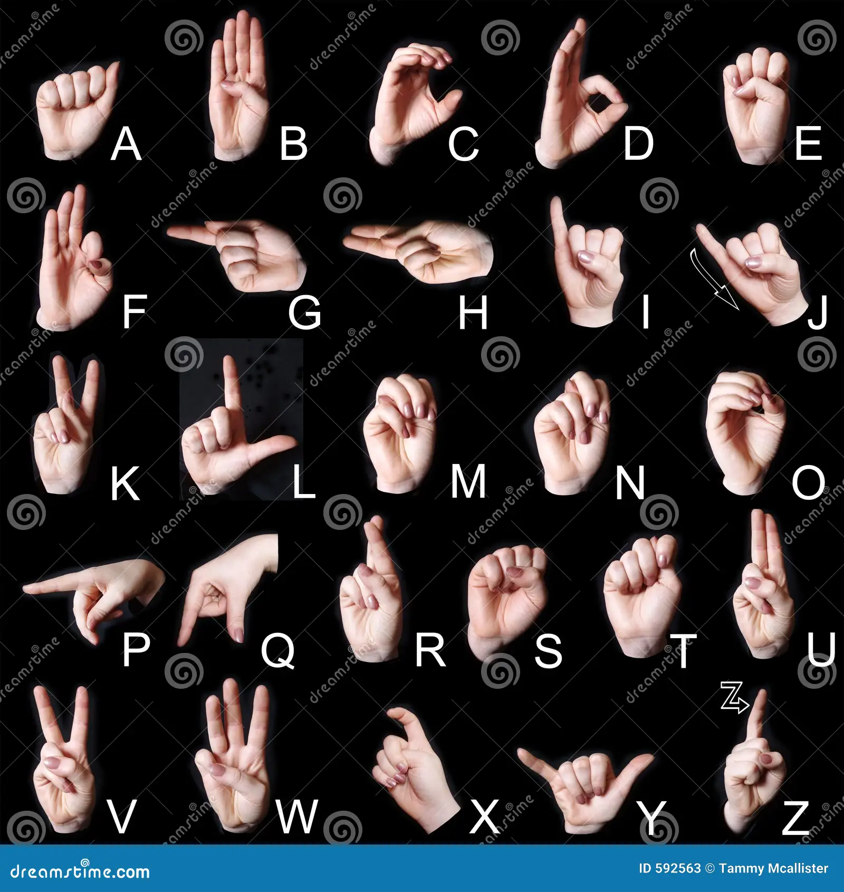

A powerful real-time system that converts American Sign Language hand gestures into text and speech. Improve communication, accessibility, and interaction using AI.
• Keep your hand inside the frame
• Ensure good lighting
• Hold gestures steady for better accuracy
